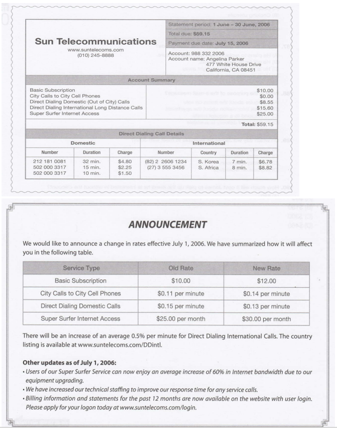
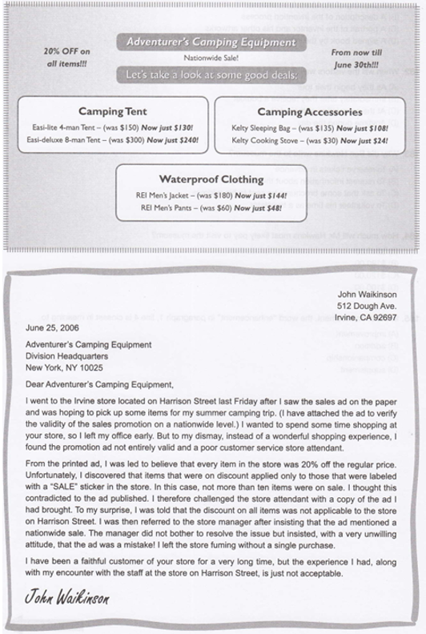

Morse in Franklin
The Franklin Museum of Telegraphy in Philadelphia will present an exhibition on the life and invention of Samuel Finley Breese Morse, the inventor of Morse code. In those days, the transmitting of information using short signals or binary code was impossible. Samuel F. B. Morse's invention brought about the enhancement of telegraphs, the further development of binary code, and the adoption of electromagnetism into this transmission technology.
Models of the first telegraph and the early days of the electrical telegraph will be displayed at the exhibition. Portraits and paintings of historic scenes by Samuel F. B. Morse will be on display as well. We will be giving free demonstrations of Morse code transmission and providing a full explanation of the development of binary code. We will also be giving out small booklets on Morse code to children to understand Morse code in a fun way. There will also be some film clips and talks that will give visitors a deeper understanding of Morse's life. It will be shown to visitors at the end of the tour so that everyone can fully grasp the meaning of the exhibition. The exhibition will commence from May 1 through July 30 at the Franklin Museum of Telegraphy. Tickets are available at $20 for adults, $10 for children below the age of 12, and a group rate of $100 for 10 or more people. Children below the age of 5 get in for free. Please contact us at Morse@franklin.org for further inquiries.
To: morse@franklin.org
From: ben@yahoo.com
Subject: Morse exhibit
Dear Franklin Museum,
A group of 12 people, including my family and friends, is looking forward to visiting the Morse exhibition. However, I was wondering if the exhibition is handicapped friendly and provides easy access to wheelchair-bound people like my brother. We also have a friend from China who is visiting us and will come along to the exhibition. He Is not very familiar with the English language and American culture. May lask if there are brochures or explanation materials in languages other than English? Are translations provided during the video clips and talks as well?
Thank you.
Ben Hawkins
175. Which of the following will NOT be a part of the exhibit?
176. When will the visitors watch a video?
177. Why did Ben Hawkins write to the museum?
178. How much will Mr. Hawkins most like pay to visit the museum?
179. In the announcement, the word "enhancement" in paragraph 1, line 4 is closet in meaning to
California Coffee Company
Questions 191-195.
To: froberts@calcoffee.com
From: gfoster@calcoffee.com
Re: Departmental expenditures
Frank,
It's just been announced that management is going to conduct an in-house audit of departmental budgets, based on a recommendation by the consulting firm we hired last month. They want to take a look at the total expenditures for a single month randomly chosen from last year. I just got off the phone with Mr. Ivanoff, and he wants us to provide a list of our department's expenditures for the month of June.
I know you're pretty busy right now, but I need someone to quickly collect this data and compile it into a brief report. The deadline for getting this information to Mr. Ivanoff is the end of the day tomorrow. I know that's soon, but in order to free up some time for yourself, you can delegate some of your workload to Harold Walker.
You should be able to find hard copies of all the information you need in the file cabinets behind Marsha Lee's desk. If you'd prefer to do this work online, all the necessary files are in a folder called "sales data" on the intranet.
Thanks for handling this, Frank. I know I can count on you.
Georgette Foster
Vice President of Sales
California Coffee Company
191. Who requested the expenditure data from Ms. Foster?
192. Why is California Coffee conducting an in-house audit?
193. Where can Mr. Roberts find hard copies of the documents he needs?
194. What was the Sales Department's budget for June 2007?
195. What accounted for more than 10% of the department's spending in June?
New Contract
To: pyoung@bastion.com
Subject: New contract
Dear Mr. Young,
From: jturner@bastion.com
Date: January 15, 2007
As you know, Bastion, Inc. has won the contract to manufacture the pipeline system for the Dryden Peninsula gas drilling project. The entire pipeline will span 500 kilometers from the drilling rig to the processing facility.
Preliminary gas drilling is scheduled for January 2008, so the engineers on the project would like to have the pipes by the first of December 2007. To meet the deadline, the management at Bastion has decided that the East Coast factory will produce half of this order while our main plant in Chester will take care of the other half. As supervisor of the East Coast factory, you are responsible for keeping me apprised of the manufacturing progress.
We have already placed an order for the steel materials, which are due to arrive there early next week. Please inform me when the shipment has been delivered, at which time I would also like you to propose a monthly manufacturing schedule.
Regards, Jim Turner
To: jturner@bastion.com
Subject: Shipment arrival
Dear Mr. Turner,
From: pyoung@bastion.com
Date: January 18, 2007
I'm writing to inform you that the full steel shipment arrived at the plant this morning. I'm sure these materials will be sufficient for the first portion of the manufacturing.
With our factory's capacity, it will take approximately one month to manufacture 50 kilometers of steel pipe. Therefore, an order of 250 kilometers of 10-inch diameter pipe should take five months to complete. After independent inspectors check the pipes, there is always the possibility that we will have to make modifications. Even if this is the case, we still have 11 months in total to complete the production, so I can guarantee we will be finished ahead of the December deadline.
In summary, our manufacturing goal is 50 kilometers of pipe per month, and I will send you an update on our progress on the 25th of every month. If there is any other specific information you would like, please let me know at your convenience.
Sincerely, Phil Young
186. What kind of company is Bastion, Inc.?
187. What is Mr. Young’s job?
188. What is the purpose of the second email?
189. When does Mr. Young expect production to be finished?
190. How does Mr. Young satisfy Mr. Turner’s request?
GSS Conference
From: Cindy Chow Sent: Tuesday, November 14, 2006 To: Edward Ngan; GSS/MALAYSIA - Renee Anderson; GSS/USA Subject: GSS Conference Hello, With reference to the GSS Conference e-mail I sent on behalf of Michael O'Brien yesterday, I would like to seek your confirmation on the availability of the New Office Visit, Lunch & Dinner on Wed, December 6, by this coming Thursday, November 16. Additionally, if you have not yet confirmed with me your schedule for the conference, please e-mail me ASAP. Please note that you are expected to check in on December 6 and check out on December 8. Your room will cost HK$800 net per night (breakfast for 1 included). However, if you would like to extend your stay by checking in at an earlier date or checking out at a later date, please let me know because the rate will be different and booking in advance is needed. I've attached some information regarding the conference with this e-mail. Should you have any queries, please feel free to e-mail me at cindy.chow@gss.com, or ring me at (852) 2255-1265. Thanks & best regards Cindy ----------------------------------------- GSS Conference Dec. 7-8, 2006 A brief schedule is as shown Wed, Dec 6- New Office Visit / Lunch / Dinner (optional) Thurs, Dec 7-GSS Conference / Lunch / Dinner Fri, Dec 8-GSS Conference/Lunch Hotel All attendees are scheduled to stay at the Stardust Hotel. Hotel address: 102 Campbell Road East Hotel telephone: 852-2268 Shuttle Bus We suggest taking the shuttle bus from the airport to the hotel. You can simply register yourself at Counter A at the arrival hall of the airport. The fare is HK$130 per trip per person. Our New Office Our New Office's address is Unit 707, 118 Campbell Road East, which is about a 5-minute walk from the hotel. Map A map showing the locations of 1) our New Office, 2) the Stardust Hotel, and 3) the restaurant where we will be dining on Dec 6 will be e-mailed to you later this week.
0191. By when should the recipient of the e-mail respond if they are interested in visiting the new office?
0192. What is implied about the hotel in the e-mail?
0193. For those interested, how will they most likely go to the new office?
0194. Which of the following will NOT be sent this week?
0195. Who will most likely send the maps?
Animation Universe
The 2007 Society for Animation Studies Conference
Portland. Oregon
June 30, 2007
Call for Papers
The 2007 conference theme 'Animation Universe' was chosen to encourage proposals that address the ubiquitous nature of animation in the society today. Papers might address the relationship between live and animated imagery, the blending of animation and other arts, the integration of animated images into social and cultural practices, cross-generational perceptions about animation shifts in the realm of animated feature production or television programing, the growth of animation industries in many countries worldwide, animation and the World Wide Web, animation and merchandising. The teaching of animation within various disciplines, of any other relevant topics
Deadline for proposal submissions: Wednesday, September 22. Proposals will be blind reviewed by a panel of SAS members, and acceptance will be announced by Friday, October 22. Individuals wishing to publish at paper in the SAS peer-reviewed journal have two options:
1. Submit your completed paper with your proposal, including the date by which your decision is needed; it will be Forwarded to the journal's editor, Nichola Dobson, for peer review.
2. Submit your completed paper within two weeks after the end of the conference that is scheduled on November 7, 2007; in this ease. It should be e-mailed directly to Nichola Dobson nicholadobson@sas.org
Sincerely, Susan Pitt
Date: Friday, September 24
From: Sean Kim
To: Nichola Dobson
Subject: Proposal Submission
Dear Mr. Nichola Dobson,
I am an animator at FUN FUN animation studio in Korea. I have submitted a proposal for the conference.
According to your announcement, we should've been notified by Wednesday, September 22 as to whether our paper was accepted or not; however, we have not received any news.
We would be grateful if you could let us know the status of our paper. Thank you in advance for your assistance.
Best regards, Sean Kim
196. According to the advertisement, when is the due date for submitting a completed paper?
197. In the advertisement, the word "integration" in paragraph 1, line 3 is closest in meaning to
198. What is the purpose of the advertisement?
199. For what purpose does a paper have to be submitted within two weeks after the conference?
200. What is the purpose of Mr. Sean Kim's e-mail?
UK citizens donated
UK citizens donated a record $12 billion in 2006, up 28 percent from 2005.
Analysts say that last year 's flood in Central America was the main reason for the sharp increase. In November last year, non-profit organizations around the country spent weeks collecting donations to contribute to the emergency aid effort in that region.
The flood aid was reminiscent of another recent catastrophe - the earthquake that struck Southeast Asia in 2004. Donations to charities rose dramatically that year in response to the call for emergency aid. However, donations then dipped slightly in 2005.
In contrast to the sharp rise in donations between 2005 and 2006 the number of people who donated money increased only one percent from the previous year. The Statistics Board reported that there were eight million donors nationwide in 2006. According to the Board, one household represents one donor.
Analysts say a steady inflation rate and an optimistic economic outlook helped to make mid-to-high income earners feel that they had more to donate.
0178. What reason is given for the sharp rise in 2006 donations?
0179. What remained relatively constant between 2005 and 2006?
0180. According to the analysts, what accelerated the donation?
Sales chart by year
To: Timothy From:
Alison Subject: Sales chart by year
Hi Timothy,
Thanks for sending the chart I requested so promptly, I know it was extremely short notice. I just want to check a few things before I present it to our shareholders this afternoon.
I always thought shoes were our highest-profit product. I think we all just take that fact for granted; so, are we mistaken? Do we consistently sell more coats than shoes? Or could the data points be mixed up, perhaps? I had a quick glance at the raw data sheets, and that didn't make me feel any more confident....
Also, could you label the units used on the profit axis? of course, we all know, but I know the stockholders will need a bit of guidance. I could write it in pen, but that's just not, you know, the image we want to portray to our investors.
Please check up on the above points. I'll pass by in 10 minutes or so to talk about this. To make a mistake this afternoon would be embarrassing.
Alison
181. Why did Timothy send Alison the chart?
182. How will the shareholders see the chart?
183. How does Alison feel about the chart?
184. What is Alison's main concern?
185. How could Alison's manner with Timothy be best described?
Sabrina's Women's Clothing
Date: October 2
Your claim has been filed and assigned reference number 274-10-012. Please be advised that most claims are resolved within seven days of the date when the claim is filed.
We apologize for the inconvenience you experienced with your order. Our record indicates that your order was shipped on August 30 via standard ground shipping. We are currently investigating this matter further and will contact you with our findings within 48 hours. If your claim is approved, we will issue a refund in the same form as your original payment was made.
Credit card reimbursement takes five business days to process, while refunds for checks and money orders are sent within 24 hours by special delivery.
Helen Garcia
Customer Service Department
Sabrina's Women's Clothing
1191. Why did Amy send the claim form’?
1192. What did Amy do before she sent the claim form?
1193. Why did the company send Amy an email?
1194. In the e-mail, the word “filed” in paragraph 1 line 1 is closest in meaning to
1195. What will the company do for Amy's claim?
Sun Telecommunication

2191. How much will Ms. Parker pay for domestic long distance calls?
2192. What does the phone bill imply?
2193. Which of the following service will NOT be available in July?
2194. Starting in July, from which service will the users benefit?
2195. Looking at the telephone bill, which service will likely affect Ms. Parker the least in July?
Marrakech restaurant
Marrakech restaurant is an exotic dining experience that transcends mere dining and brings you into another world where you are greeted by smiling faces in Moroccan garb, taking you out of your daily routine for several wonderful hours. Course after course of Moroccan cuisine featuring succulent meats, vegetables, and salads served against the backdrop of North African music and decor will both excite and lull you into one of the most special evenings of your life. Also, our expert staff is committed to provide top-quality service to our customers.
Marrakech restaurant is the perfect place for a celebration and gives exquisite attention to those enjoying a birthday, anniversary, graduation, wedding reception, or that one-time secret moment that you want to create or remember. We promise you an experience far out of the ordinary that you will never forget. Call us at 444-3327 or visit our website www.marrakech.com for more details and reservations.
December Special: Mention this advertisement when making a group reservation and get a 10% discount!*
* Group reservation: 8 people or over. Effective from Dec. 1 to Dec. 31.
From: Mia Nire.
To: Tabar. Telloun
Subject: Reservation
Date: Dec 3
Dear Mr. Jelloun:
I saw your advertisement in the Food Magazine and tried to call your restaurant several times, but each attempt has failed. The phone number shown in the ad must be inaccurate, because I keep hearing a message that the number is not in service. So I finally decided to make a reservation through your website.
I would like to make a reservation for 10 people for Friday, Dec 12 at 7:30 p.m. Since it is a birthday party. I would like a private room, if possible. Also, I believe I am entitled to the special offer mentioned in the advertisement.
Please send a confirmation to my e-mail address(nirom@chfi.com). I'd also appreciate it if you send me information on the party and set menus.
Question 34: What is being promoted?
Question 35: What is the purpose of Mia Niro's e-mail?
Question 36: According to the passages, what seems to be true?
Le Bistro Lamoure
Thank you for dining at Le Bistro Lamoure. We hope that you had a great experience with us. We are always trying to improve our food and service, so please spend a minute filling out the customer satisfaction survey below, and leave it at your table. Name: David Carvey Address: 2 I4 West ChesterAve. Calgary, Alb. Canada Phone: E-mail: dcarr@gmail.com * Please indicate your level of satisfaction from 1 (poor) to 5 (excellent) Food was served hot and fresh. ( 4 ) The menu has a good selection. ( 4 ) The quality of the food was good. ( 4 ) The food was tasty and flavorful. ( 4 ) Did you have a reservation? ( Yes ) How many minutes did you wait? ( 25 ) Was that acceptable or not? ( No ) *Please indicate your level of agreement from 1 (poor) to 5 (excellent) Our server was there to take your order quickly and promptly. ( 3 ) Overall, the service was excellent. ( 3 ) Atmosphere ( 5 ) Comments: I enjoyed my meal at your restaurant, but I felt that your service lacked in efficiency. Although I had booked a reservation, my girlfriend and I waited 25 minutes!!! This is a very long time considering I booked 3 months in advance. Also, your wait staff was a little bit rude to me when I ordered. I am not fluent in French, but I try. I hope that you can address these issues, because your food is very good, and I really enjoyed the atmosphere.
To: David Carvey From: Jilles LeDuc Date: June 2 Mr. Carvey, My name is Jilles LeDuc, and I am the restaurant manager. I really appreciate the time you took to fill out our customer satisfaction survey. We take your comments very seriously and are working on the amount of time our customers have to wait before seating. I hope that you will come back soon as we have expanded our main dining room giving us 20 more tables. Next time you come please be sure to say hello to me and I will make sure you get a free dessert for you and your guest. We will also be changing our menu a bit to include some new fare from the south of France. I think you will really enjoy it. I hope you come back soon. Jilles LeDuc Le Bistro Lamoure Manager
Question 44: What is the purpose of Jilles LeDuc's e-mail?
Question 45: What did David find the best about the restaurant?
Question 46: How did David feel about his most recent meal at Le Bistro Lamoure?
Notification of late payment
From: Regina Turner
To: Mark Heredia, Welhouse, Manufacturing
Date: June 19, 2009
Subject: Notification of late payment
Mr. Heredia:
I have received notice from William Ross in our financial department that your firm has not remitted payment for an order you placed with us on June 10. The reference number for this order is 36895NI01. Please see the list at the end of this email for the items contained in the order.
The products you requested have been shipped and should have arrived at your factory. If there is some problem with the products, or if they have not yet been delivered, please let me know so I can address the situation.
Thank you,
Regina Turner, Accounts Representative
Ace4 Industrial Supplies
From: Mark Heredia
To: Regina Turner, Ace4 Industrial Supplies
Date: June 21, 2009 Subject:
Re: Notification of late payment
Dear Ms. Turner,
Please accept my apologies for our failure to finalize the payment for order #36895NI01 on schedule. Let me assure you that we have looked into the problem and that the amount owed will be transferred to your company's account tomorrow morning.
We have been experiencing some technical difficulties with our computerized accounting system for the past several days. I am sure that these problems were responsible for the missed payment. I am sending a copy of this email to Amalia Oxley, our IT director, so she will be aware of the situation. She will work to resolve the current issue and make sure it doesn't happen again in the future.
Again, we at Welhouse Manufacturing apologize for the delayed payment. The products we ordered arrived last week and everything is as we requested. We hope to continue doing business with you for many years to come.
Yours truly,
Mark Heredia, Supplies Department
1. Why did Ms. Turner email Mr. Heredia?
2. The word "address" in paragraph 2, line 3 of the first email is closest in meaning to
3. What is the purpose of Mr. Heredia’s email?
4. Who is responsible for fixing the technical problem?
5. According to Mr. Heredia, when will Ace4 Industrial Supplies receive payment?
Government to slap new rules
Government To Slap New Rules On Auto Industry
By Celia Doherty
In a new strategy aimed at curbing the country's greenhouse gas emissions, the federal government is ready to impose new regulations on the automobile industry.
Currently, manufacturers voluntarily follow standards set by the International Energy Agency, or IEA. The Minister of the Environment, Glen McDonald, says this method has proven to be ineffective in reducing exhaust pipe pollution. "Voluntary compliance is no longer sufficient to keep the country on the right track of reducing harmful carbon dioxide emissions." If legislation is passed in parliament, it would be the first time the nation's automobile manufacturers are obliged to meet standards set by the IEA.
Studies show that exhaust pipe emissions can
be cut by making smaller, lighter cars, engines that burn cleaner fuels, and manufacturing more gasoline/electric hybrid cars. The leader of the Autoworkers Union, Darcy Enfield, says these types of cars are not what consumers want and wouldn't allow them to compete with imported products. He says the country's automobile industry has already taken measures to reduce vehicle emissions, and that the proposed legislation is so drastic it would pat many manufacturers cut of business. "The regulations would be a blow to an industry that's already struggling." He added that government should be tougher on the biggest culprits of carbon dioxide emissions - the oil and gas sectors.
To the editor:
In Tuesday's article on the new emissions regulations for the automobile industry, the reporter falls short of outl ning the terrible consequences of the proposed measures. Do readers understand that thousands of people would lose their jobs and livelihoods?
The government should consider a more moderate approach to the problem. We could offer consumers incentives, like trading in their old cars for newer, more fuel-efficient models. Then the automobile industry could stay afloat.
The Association of Automobile Manufacturing (AAM) is willing to meet with government officials to come up with alternative solutions.
Larry Fulcrum AAM President
6. What is the main topic of the article?
7. What does the government say is not working anymore?
8. Who wrote the letter?
9. What does Mr. Fulcrum suggest the government try?
10. What do Darcy Enfield and Larry Fulcrum have in common?
Yankee Automotive, Inc
Yankee Automotive, Inc. 716 Sugar Maple Lane Nashua, NH 03064 Customer Information Vehicle Information Leon Spencer Year: 2002 7 Hilltop Drive Make/Model: Toyota Corolla Nashua, NH 03064 + License Plate: H2V 372 ======================================================================================= Service Description Amount 10/22/08 - Owner brought his car in to purchase Parts (Tires) | $420.00 new tires for winter. Removed four worn, radial Labor (Tires) | $30.00 tires and replaced them with new All-Weather Super Traction tires. Owner kept the old tires. During service, noted that the car's windshield Parts (Wipers) | $9.99 wipers were in poor condition. Installed a new set Labor (Wipers) | $0.00 of wipers, with the owner's permission.
Parts Subtotal: $429.99 Labor Subtotal: $30.00 Taxes: $40.37 Amount Due: $500.36 Automobile serviced by: Bob Lang Please remit payment in full by November 21, 2008. Checks should be made payable to Yankee Automotive, Inc. ************************ Yankee Automotive, Inc. 716 Sugar Maple Lane Nashua, NH 03064 December 2, 2008 Leon Spencer 7 Hilltop Drive Nashua, NH 03064 Dear Mr. Spencer: This is a reminder that you have an unpaid balance of $309.36 remaining on an outstanding invoice for work done on your 2002 Toyota Corolla on October 22nd, 2008. Yankee Automotive received a partial payment of $200 on October 22nd. This amount has been applied to your account. However, the remaining balance is now 10 days past due. Please remit the remaining balance in full to our office by December 15th. If we do not receive a complete payment by that date, a late charge of 1% per day will be applied to the balance. Yankee Automotive is willing to work with its customers to arrange personalized payment plans on a case-by-case basis. If you feel this would be beneficial, please contact us at your earliest convenience to discuss paying your balance in monthly installments. Charlene Patel Manager Yankee Automotive, Inc.
1. Why did Mr. Spencer bring his car to Yankee Automotive?
2. Who is Bob Lang?
3. According to the invoice, how much was Mr. Spencer charged in total?
4. What is the purpose of Ms. Patel’s letter?
5. What does Ms. Patel offer to Mr. Spencer?
Adventurer's Camping Equipment

186. Which of the following is NOT mentioned in the advertisement?
187. According to the ad, how much would it cost to purchase a 4-man tent and a sleeping bag?
188. What is the purpose of the letter?
189. In the letter, the word "attached" in paragraph 1, line 2 is closest in meaning to
190. Who did Mr. Waikinson write the letter to?
Gaz International Sells Its Siberian Oil Operations to Local Company
ZURICH – Yevgeni Star, a mid-sized Russian oil company, has bought the Siberian oil and gas operations of Zurich-based Gaz International. While no official figures have been released by either firm, the deal is believed to be worth in the vicinity of S$145 million.
Until recently, Gaz International had been seeking to expand its exploration and refining operations, but it has reportedly been frustrated by local regulatory bodies. Gaz International shares rose by 1% as news of the sale filtered into the media.
Yevgeni Star, which has some cross-share holdings with large industrial corporations in related and unrelated fields, notably in the energy and shipbuilding sectors, will become one of Russia’s leading players in the vital strategic area of energy supplies.
Explaining the reasons for the sale, Gaz International CEO Fritz Faschler told reporters yesterday, “Our board of directors believes that this is the ideal time to consolidate our operations by concentrating on less-risky investments while at the same time boosting our interests in research and development. I mean, in particular, research into alternative fuels and energy sources. I have no doubt that this deal is in the interests of both parties.”
It is known that the deal includes significant technology transfers. A team of Gaz International engineers and administrators will train Yevgeni engineers in the operation of exploration and extraction technology developed by the international giant.
Yevgeni Star operators were also keen to acquire Gaz International’s license to explore and develop northern oil fields until 2015. The current production of 10,000 barrels a day is expected to at least double over the next 5 years.
Due to the complex nature of legal arrangements surrounding the transfer of licenses and technological information, the deal is not expected to be sewn up before January of next year. Approval for the license transfer must be negotiated with Russian authorities while several major Swiss banks will vet the financial arrangements and the details of technology transfer.
1.. What is true about Gaz International?
2.. Which of the following will be the result of a deal mentioned in the article?
3.. Who is Mr. Fritz Faschler?
4.. According to the article, when will the deal be finalized?
5.. What is the main cause of the delay in closing the deal?
Sports Today Letter
Sports Today
365 Boulevard Avenue
New York, NY 10032
October 18, 2006
Jessica Parker
555 George Street
Los Angeles, CA 90095
Dear Ms. Parker,
We want to acknowledge receipt of and thank you for your letter dated September 28 concerning issues of Sports Today not sent to you. We have investigated the matter and found that you should have received your September and October issues, as your subscription is not up for renewal until November 1, 2006.
We would hereby like to apologize sincerely for our mistakes. I have corrected the error and raised a packing order to be sent to you tomorrow on October 19, 2006, for the two missing issues. And to make up for the mistakes we have made, we have enclosed our two other best selling magazines (Cars Today and Home Today) in a different package.
We’d also like to let you know that we value you as an important customer to Sports Today. I would like to take this opportunity to invite you to renew your subscription with us for another year. We have attached a self-addressed, postage-paid envelope and a subscription form with a special discount of 25% off our normal rates for your convenience.
Once again, please accept our sincere apology for the inconvenience we caused you. Feel free to contact us or email us if you need any further help or clarification. We will always be at your service.
Tom Bridges
Customer Service Officer
6. What is Mr. Bridges' main purpose in writing this letter?
7. When did Ms. Parker send the letter?
8. What will Ms. Parker receive as compensation?
9. The phrase "up for" in paragraph 1, line 4 is closest in meaning to
10. What is being sent with this letter?
City Hospital Announcement
City Hospital
123 Main Street
Boston, MA 02114
Phone: (617) 555-0123
Fax: (617) 555-0124
cityhospital@email.com
Introducing Our New Doctor
It is with great pleasure that I introduce Dr. Elizabeth Monroe, who will be joining the City Hospital staff on August 1 as a pediatrician. Dr. Monroe comes to us with 15 years of experience, having previously worked at General Hospital in New York, where she was recognized for her dedication to patient care. She graduated from Harvard Medical School and completed her residency at Boston Children's Hospital.
Dr. Monroe will be seeing patients aged 0-18 on Mondays, Wednesdays, and Fridays from 9:00 a.m. to 5:00 p.m. Appointments can be scheduled by calling our office or visiting our website at www.cityhospital.org. We are confident that Dr. Monroe will be a valuable addition to our team, and we look forward to her contributions to the health and well-being of our young patients.
Margaret Thompson
Hospital Administrator
July 15, 2015
11. What is the purpose of this announcement?
12. How long has Dr. Monroe been working as a doctor?
13. Where did Dr. Monroe complete her residency?
14. On which days will Dr. Monroe see patients?
15. Who wrote this announcement?
Important Notice from Office of Public Records
Important Notice
(To be kept posted in clear view at all times)
Subject: Schedule of Building Works
Notice date: March 15th
Written by: Mike Connor, Chairman of the Office of Public Records
The Office of Public Records has been scheduled for a series of renovation works ranging from new wiring and the changing of tiles and carpets to the installation of fire preventive panels. This will be done floor by floor beginning on April 1. Affected offices will be temporarily relocated to another allocated space within the building. The affected floors, relocation schedule, and allocated space are as follows:
| Floor | Affected Period | Allocated Space for Relocation |
|---|---|---|
| 1 | April 1-10 | Second Floor |
| 2 | April 11-20 | Third Floor |
| 3 | April 21-30 | Fourth Floor |
| 4 | May 1-9 | Fifth Floor |
| 5 | May 10-19 | Fourth Floor |
It will be necessary to make new schedule changes as unexpected delays may occur. Departments with more staff will experience temporary overcrowding. We urge all visitors to these offices to come during normal operating hours before and after the renovations to avoid any inconveniences.
We want to express our thanks for your kind understanding and tolerance towards our staff during this unpleasant and inconvenient period.
16. What is the purpose of the announcement?
17. Where will employees on the ground floor likely be on March 15?
18. The word "urge" in paragraph 2, line 2 is closest in meaning to
19. During which period will the employees on the fourth floor not be affected?
GEM Computers News Report
GEM Computers has topped the Wall Street headlines with its organization wide restructuring exercise. GEM Computers, a computer giant, sold its low margin competitive desktop division. In recent years, GEM Computers has spent billions of dollars investing in the desktop division, where low cost manufacturers have managed to stay at the top of the competition. However, GEM's desktop products have virtually stopped evolving and ceased making new products despite its heavy spending on R&D. This has caused the cash-stricken company to offer its loss-making division to Electronica. As one of the leading computer companies, Electronica paid $5 billion to buy the division. The market deems this as more favorable to GEM, as it received more than what it deserves for selling the division. It is expected to pay off most of its multimillion dollar loans and avoid filing for bankruptcy for some time. Economists comment that GEM will start turning a profit as long as it keeps with its core products of minicomputers and mainframe systems.
20. What is being reported?
21. Why did GEM Computers make its decision to make the move?
22. How is the news being interpreted by the market?
Joy-Market Returns Policy
With a few exceptions, anything purchased from a Joy-Market store may be exchanged or returned for a full refund of the purchase price within 30 days provided 1) that the goods are unused, 2) that the goods are placed in their original package, and 3) that proof of purchase is provided.
IMPORTANT: please note
Food purchased from our fresh food counters must be returned no later than 24 hours after the time of purchase.
Some items must be returned unopened. These items are: toys, music CDs and DVDs, computer software and hardware, videos, glassware, kitchenware, undergarments, and packaged hardware items.
Customers, or those returning Joy-Market items received as gifts, should provide photo identification at the time of application.
Customers returning goods valued at less than $100 will be issued an exchange certificate or money order on the spot.
For returns of goods valued at $100 or more, a check will be mailed to the purchaser within 3 working days of the return.
The amount of refunds or exchange certificates will be the same as the price paid for the item returned.
Joy-Market aims to satisfy its customers with high-quality items sold in good condition.
A full refund will be provided for all items if returned within 24 hours.
22. What is NOT stated in the policy?
23. In which of the following situations would a person have to show photo identification?
24. According to the policy, how long will it take to get a refund for a purchase made under $100?
Express Parcel Shipper's Receipt
Date: July 15th, 2006
Total Weight: 5.25 kg
Total Cost: $40.11
From:
Greg Mitchell
377 St. Klida Street
Daytona Beach, FL 32029
United States of America
To:
Lee Da Sau
42 Qing Building
21-33 KWAI CHUNG
New Territory Hong Kong
Country: Hong Kong
Tel: (852) 6423-0829
| Contents Description | Number of Pieces | Origin | Weight | Value |
|---|---|---|---|---|
| Documents (John Mills) | 10 | USA | 0.80 kg | $0 |
| Books | 2 | USA | 0.45 kg | $24 |
| Stationery | 1 | USA | 4.00 kg | $12 |
| Samples | 1 | - | - | - |
| - Gift | - | - | - | - |
| - ☐ Commercial Product | - | - | - | - |
Instructions if parcel is non-delivered:
☐ Return shipment to sender after 30 days
☐ Consider it abandoned
☐ Return immediately to sender
- ☐ by express mail
- ☐ by normal mail
☑ Forward to the following address:
Mr. Jason Chow
55 Canton Road, Suite #205
Hong Kong (852) 6443-0498
Receipt #227000123987
25. Who is the recipient of this delivery?
26. How should the delivery be handled if it does not reach the recipient?
27. Which of the following information is NOT in the document?
HOMESTEAD LANDHOLDINGS LIMITED
We currently have opportunities available for assistant superintendent couples. We offer a competitive salary as well as a two-bedroom apartment plus benefits. If you are experienced, motivated, and hardworking and wish to advance in your career, please fax your resume to 216-755-5959.
28. What is NOT being offered with the job?
29. What will be the duties of the person being hired?
Sophie’s Place
Questionnaire
Dear Guests,
Your continuous support and patronage is our greatest source of comfort. Your heartfelt comments are our compelling drive to provide better service for you. Please kindly complete this questionnaire to let us know your thoughts. Thank you very much.
Name: John Williams
Telephone: 755-2563
Date of Visit: Nov. 28, 2006
Time of Visit: 6:30 p.m.
| Quality of Food | Good | Fair | Poor | Very Poor |
|---|---|---|---|---|
| Taste | (√) | ( ) | ( ) | ( ) |
| Variety | ( ) | ( ) | ( ) | ( ) |
| Price | (√) | ( ) | ( ) | ( ) |
| Quality of Service | Good | Fair | Poor | Very Poor |
|---|---|---|---|---|
| Efficiency of Service | ( ) | ( ) | (√) | ( ) |
| Staff Courtesy | ( ) | (√) | ( ) | ( ) |
| Cleanliness | ( ) | (√) | ( ) | ( ) |
Further Comments:
We had to wait over an hour for our food to arrive. The food was very tasty,
but I think the place needs more people to wait on customers.
30. Which of the following is NOT true about the results of the questionnaire?
31. What can be implied about Mr. Williams?
Office Supply & Depot
Welcome to our Grand Opening Sale!
It is our pleasure to introduce our 3rd branch store in the metropolitan city of Chicago. Located in the center of the busy business district, it is our largest store yet. And, to get you familiar with our store, we are having a Grand Opening Sale that you don’t want to miss.
So come on down, and pay us a visit to be a part of this great Sale. Starting from November 25 until December 2, everything in the store will be discounted 30%. This is going to be an excellent opportunity to get in on some of the best bargains ever:
- Hewlett Packard A4 inkjet paper (400 sheets) - $15.00
- Clear blue ballpoint pens (20 pens) - $4.99
- Panda stationery set - $12.50
- Sony CD-R (50 pieces) - $29.75
- Sticky pads (76mm x 127mm) - $2.99
When you are in the store, take a moment of your time to join our Premier Discount Club. It’s free, and with it you will get an additional 5% off on all items purchased in any of our stores in the city. There are no obligations or strings attached. Just sign up when you visit us, and maximize your discounts to the fullest.
32. What is suggested in the advertisement?
33. How can a customer receive the largest discount?
Goodman Theater Company
CONFIDENTIAL
Date: July 11
To: Charlie Ullman
From: Gordon Furr
Re: Budget Approval Concerns
Thank you for attending Wednesday's meeting. I'm glad that after exploring several possibilities we were able to come to an agreement on ways to reduce spending in next year's equipment budget. Because of this $2,000 reduction, I have no doubt that our chairperson Renée Walker will approve the new budget at Friday's meeting. See you in the conference room on Friday.
34.. What problem is mentioned in the memo?
35.. What is Renée Walker expected to do on Friday?
Jamie's Kitchen Membership
Free Meal Coupon!
- Free meal for 1 when 2 or more adults visit us
- Coupon is valid for lunch or dinner.
- Members only: Please present your membership card with this coupon
- Not valid on Saturdays, Sundays, or holidays
- This cannot be used as cash.
This coupon is valid through December 31.
36.. What is the coupon for?
37.. What restriction is placed on the coupon?
Facsimile Transmission
Receipt Number: 3342-21-5674
Date: Oct. 1
To: Norton Reuben
From: Gerald Franks, Manager, Information Services
Numbers: fax: 310-736-9988; phone: 310-736-9898, extension: 510
Pages: 5 (Including cover sheet)
Dear Mr. Norton,
My name is Gerald from Kaylot, LTD., and I am contacting you on behalf of Kaylot department store.
As part of Kaylot department's commitment to continuous improvement, they have asked Kaylot, LTD. to contact shoppers such as you.
Do you have a few minutes to fill the following pages regarding your most recent shopping experience at Kaylot department store?
Thanks very much,
Gerald
38. What is the purpose of this fax?
39. What does Mr. Gerald Franks request that Mr. Norton Reuben do?
Retirement Announcement
To: All staff
From: Jenny Smith
Date: Nov. 28, 2007
Dear Colleagues,
I would like to inform you that I am retiring from my position with Gardner Agency, effective Jan. 1, 2008.
Thank you for the opportunities for professional and personal development that you have provided me with over the years. I have enjoyed working for the agency since 1988 and appreciate the support provided me during my tenure with the company.
While I look forward to enjoying my retirement, you're all invited to dinner. A casual dinner will be held at Italian Restaurant next week. Please contact my assistant, Victoria Rodriguez, if you can join me that day.
I wish you every good fortune, and I would like to thank you for having me as your colleague.
Jenny
40. How long did Jenny Smith work for Gardner Agency?
41. When will the party be held?
42. Who should employees contact if they plan to attend?
Resignation Letter
From: Mark Weaver
712 Colorado Street #201
75661 Montreal, Canada
To: Casa de Franches
105 Grandview Street
75620 Montreal, Canada
Date: April 27
Dear Sir/Madam,
As required by my contract of employment, I hereby give you 3 weeks’ notice of my intention to leave my position as an Assistant Manager.
I have decided that it is time to move on, and I have accepted a position elsewhere. This was not an easy decision and took a lot of consideration. However, I am confident that my new role will help me move towards some of the goals I have for my career.
I understand that my notice period is 4 weeks, but I would like to join my new employer at the earliest date. Therefore, I would like to request that you waive this notice period and relieve me of my duties immediately. Please be assured that I will do all I can to assist in the smooth transfer of my responsibilities before leaving.
If I can be of any assistance during this transition, please let me know.
Yours faithfully,
Mark Weaver
43. What is the main purpose of the letter?
44. When did he have to give the company notice?
45. Why does Mr. Weaver decide to leave the Casa de Franches?
FastnGo Moving Service Information
Greating!
Thanks for choosing FastnGo for all your moving needs. We offer a competitive, low-cost moving solution. When moving with a traditional van line, you have no control over who packs, loads and transports your belongings; nor can you be sure that they are treating your things with proper care.
Business Protection Plan
Your peace of mind is important to us! Our business packs and transports valuables, fragile materials, and expensive inventory, and they are all completely covered by our plan. We encourage you to review our popular protection option below.
Protection Option Plan
Liability insurance - Protects the customer and authorized additional driver(s) up to $1 million for any bodily injury or property damage liability claims made by third parties resulting from an auto accident with the FastnGo truck. Your own liability insurance will not be called on unless the $1 million limit is exceeded.
Cancellation
If you need to cancel or modify the reservation in any way, you must contact FastnGo at least 48 hours before the pick-up date. You must contact either the FastnGo pick-up location provided on the bottom of this page and in the confirmation e-mail or call 1-080-555-4289. Failure to notify FastnGo in this time frame may result in a $50 cancellation fee being charged to your credit card.
46.. What is the purpose of this document?
47.. What is implied about FastnGo service?
48.. How can a caller avoid the cancellation fee?
49.. For whom is the document most likely intended?
Your answer to a healthy way of life at Valance Center
Whether you want to slim down or tone up, have more energy for work or for your family, or just look and feel better - we're here to help.
We want you to exercise your options from basketball to racquetball, swimming to indoor cycling, free weights to personal training to group fitness and much more. We offer options in an environment that makes you feel at home, no matter what your current fitness level may be.
Our variety of exercise options and membership plans make fitness both fun and affordable. Join us now and receive free swimming classes during your first month. This is for monthly memberships, and payment by electronic transfer is required.
Why not join today?
We are now offering a free trial!
See for yourself what makes Valance Center so different. You can use your pass for one day you choose anytime you want. Just tell us the date you would like your pass to use: ( / / ).
7710 Turner PL
Norwalk, OH 21723
50. What kind of business is Valance Center?
51. How frequently should membership fees be paid?
52. What can new members receive for free?
53. How many days do they offer a free trial pass?
Network Disruption Notice
Attn: All staff
From: Alice Bergman, Vice President
Subject: Network disruption
All employees should be aware that the computer network will be shut down on Friday, April 6, between 1 p.m. and 4 p.m. The disruption is in addition to our monthly maintenance sessions, so I'll give a brief explanation here why we're having the shutdown.
In recent months, employees have been complaining about delays in computer functions. It has been determined that viruses and other security breaches have created the inadequate processing capacities. In an attempt to prevent further breaches, our computer technicians will install new security software, which will require the entire network to be temporarily off-line.
We apologize for the inconvenience this may cause. If there are any concerns regarding this procedure, or if you have any other inquiries, please get in touch with me or your supervisor.
Alice Bergman
abergman@healthbuffs.org
865-4464
TO: bparker@healthbuffs.org
FROM: jcopland@healthbuffs.org
SUBJECT: Network shutdown
DATE: Wednesday, April 4
Hi, Ben, I'm writing in regard to Friday's shutdown of Health Buffs' computer network. Just so you know, I've already written Ms. Bergman to express my discontent at the lack of sufficient prior notice for this disruption.
My team will be making a presentation at the annual Health Board meeting on Monday, April 9, at which health organizations from around network. But there are two members of our team who do not have home computers, and they require the equipment on Friday to finish their presentations.
I'm hoping you will have a solution to this difficulty. Please let me know as soon as possible how we can solve this problem.
Sincerely,
Janet Copland
Health Project Coordinator
54. What is the purpose of the memo?
55. Why is the new software being installed?
56. Who will receive the email?
57. What is Ms. Copland's complaint?
58. What is Ms. Copland asking in the email?
The Wasniak Herald
Wednesday, August 14
From WTH Meteorological Center
Meteorologists have forecasted severe thunderstorms covering most of Wasniak. Heavy rain is expected to start early on Thursday morning (64) and will continue until Sunday evening. The rain will also be accompanied by colder temperatures, hovering around 24 degrees Celsius. And while the predicted amount of rainfall should be less than 10 centimeters, some areas may see flooding.
The rain should let up by Sunday night, but clouds will remain until early on Tuesday.
The Wasniak Herald
Tuesday, August 19
By Hong Tran
Unpredictable Weather Deals Heavy Blow to Parks and Recreation Department
The Wasniak P&R Department reports that more than 30 outdoor programs and events, from family reunions to wedding ceremonies, were cancelled last weekend (65). These events were cancelled because of a severe rain and thunderstorm forecast that was issued earlier in the week. Despite the grim prediction, however, the weather was not that bad. In fact, the rain did not last very long; after a short drizzle, the sun returned. The temperature was as predicted (190), as it was somewhere very close to 24 degrees. It was altogether a pretty nice day on Saturday, and would have been an even nicer day for everyone had the scheduled events not been cancelled.
These cancellations caused a significant loss of revenue for the P&R Department. “The money from these types of public events accounts for a very large amount of our yearly revenue (188), and supports most of the funding for the parks maintenance (189) for the whole year,” said Davie Wong, a financial manager at Parks and Recreation. He went on to say that he hopes they can find some time to reschedule the events, and that they can partially recover the lost funds.
59. According to the weather forecast in the first article, what is true?
60. In the second article, what problem did Wasniak’s Parks and Recreation Department experience?
61. Why is August an important month for the Parks and Recreation Department?
62. In the second article, the word ‘maintenance’ in paragraph 2, line 3 is closest in meaning to
63. What were the forecasters correct about?
Email Correspondence: Play Game Console Issue
From: Joan Shelton
To: Customer Service
Subject: Game Console Problem
Dear Sir,
I'm writing to ask for help with my new Play Game console which I purchased three weeks ago. I made the purchase because one of the advertised strengths of Play Game is its ability to perform smoothly. However, games freeze while playing, and this happens very frequently.
I would prefer to solve the problem myself using your website, and I am perfectly competent to do so. Unfortunately, your website does not have a solution to this particular problem. I contacted the store where I purchased this game console, but the technicians there have been unable to provide me with assistance. Any information and suggestions you can offer in solving this problem would be much appreciated.
Faithfully,
Joan Shelton
From: Ethan Davison
To: Joan Shelton
Date: March 9, 2:48 p.m.
Re: Game Console Problem
Dear Ms. Shelton,
I have thoroughly reviewed the issue you reported with your Play Game console. Occasional lockups with video games can happen from time to time and do not necessarily indicate a need for repair or replacement. However, if you are experiencing frequent lockups, please see the information below.
- Make sure you are using only licensed accessories. Unlicensed products and accessories do not undergo the Play Game testing and evaluation process.
- If a game freezes while playing, try unplugging the AC adapter from the back of the console, then check the air vents to make sure they're not being blocked. If your problem still persists, you may ship the console to our factory in New York for diagnosis by our team of specialists. If you determine that you must send your machine to the factory, please contact us so that we can assist you with a shipping label and further instructions.
Sincerely,
Ethan Davison
Technical Support Representative
64. When did Joan Shelton buy the Play Game console?
65. How would Joan Shelton prefer to solve the problem?
66. According to the second e-mail, what should Joan Shelton do next?
67. According to the first e-mail, when did Joan Shelton have a problem?
68. What is NOT a possible cause of the problem?
Concert Event: Daniel Metzgert Unplugged
Location: Savoy Music (Downtown)
Dates: Friday and Saturday, October 19–20
Show Time: 8:30 PM
Tickets: $22 for adults, $12 for children (12 and under). Available by mail (check or money order), phone (credit card), or at the door (cash only after October 18).
Contact: Jamie Severn
savoyperformances@savoy.com
321-213-3244
Letter from Janet Peters:
Dear Ms. Severn,
I am thrilled to hear that Daniel Metzgert will be making an appearance at your store this month. Metzgert has been a favorite of mine for years, and I have enjoyed many concerts of his at other venues over the years. The show at the Savoy will be my first chance to see him play acoustically. Thank you for bringing him back to Colorado! Please reserve two adult tickets and one children’s ticket in my name. Enclosed is a check for $56. Please hold my tickets at Will Call. I will be at the Savoy early on the 19th to pick them up.
Thank you,
Janet Peters
69. After October 18, how can someone pay for a ticket?
70. On the flyer, what does the word "form" in line 13 refer to?
71. What does the flyer mention?
72. When will Ms. Peters attend the performance?
73. What does the letter indicate about Ms. Peters?
Lakeshore
305 Jefferson Avenue
Denver, CO 81 I62
Dear Mr. Leerberg,
Your advertisement for an HR assistant fits my qualifications perfectly, and I am writing to express my interest in and enthusiasm for the position.
After completing a business degree from Colorado University in June, I enrolled in a Human Resources Development program to further enhance my credentials in the field.
Based on your description of the ideal candidate, I also offer:
- A track record of excellent performance as a part-time/summer employee concurrent with full-time college enrollment
- Technical proficiency in database programs and MS Office
If you agree that my services would be valuable to Lakeshore, I would very much like to meet in person to learn more about your HR support needs.
Sincerely yours,
Rebecca Platt
Rebecca Platt
3 Harbor Blvd.
Bridgeport, CT 06604
January 14
Dear Ms. Platt,
Thank you for your interest in our company. We received your letter and your résumé, and we are always interested in providing opportunities to recent graduates with experience and qualifications like you.
Unfortunately, the position has been already filled by another applicant, and there is no other job opening that matches your specific interest at the present time. On a more positive note, however, we are looking for a trainee to help conduct employment labor relations polls.
It is a temporary position that could lead to an offer of permanent employment. If this type of work interests you, I suggest you contact Legg Mason, the head of our Human Resources Department, to discuss the responsibilities of the position.
Yours truly,
Will Leerberg
Lakeshore
74. What position is Ms. Platt interested in?
75. What qualification does Ms. Platt mention?
76. What news does Mr. Leerberg give Ms. Platt?
77. Why should Ms. Platt contact Legg Mason?
78. In the second letter, the word "positive" in paragraph 2, line 3 is closest in meaning to
Sarah
March 29
Mr. and Mrs. Sachs
12 Mountain View Road,
Denver, Colorado
Dear Mr. and Mrs. Sachs,
I'm very sorry that your stay with us was not satisfactory. On the week that you visited, we had three school groups also visiting, which has never happened before. Unfortunately, our staff were not prepared, and this resulted in the deficiencies of cleanliness and service that you experienced.
In order to change your opinion of us, we would like to invite you to stay with us again, at no charge. I've enclosed a coupon in the letter for a week's accommodation redeemable at any of our lodges.
I hope you will take up our offer to experience our usual, phenomenal service.
Sincerely,
Jose Campbell
Customer Services
Crystal Ski Resorts
Crystal Ski Resorts
Invites you to enjoy free accommodation at the USA's number one winter holiday destination.
The offer includes:
One week bed and breakfast at any of our ski lodges. Lifts and equipment rental not included.
To be claimed by March 30th, next year.
To claim this coupon, present it at the admission desk at the time of admission. Prior reservation required.
Offer code: 75934-AR-8003
79. Why did Jose Campbell write to the Sachs?
80. What did the Sachs most likely complain about?
81. What is Mr. Campbell offering?
82. How long do the Sachs have to use their coupon?
83. The word "deficiencies" in paragraph 1, line 6, of the letter is closest in meaning to what?
Absolute Interior Design
Our work ranges from a single, small detail to complete residential projects. Each job begins with either a brief telephone or email conversation at which time the basics of the client's needs are discussed. There is no fee for this preliminary service. This is followed by an Initial Consultation where more in-depth information about the client's requirements, wishes and budget details are discussed.
Over the past twenty years we've found access to unique sources, both national and international, that include craftspeople with special talents which are not available in the general marketplace. Experience also allows us to carry out efficient projects which eliminate virtually all of the negative aspects and fears usually associated with larger scale renovations.
While we are effective with project supervision, we also are realistic when describing the dusty, messy and unpleasant times which are part and parcel of a major renovation project. We prepare the client, with as much information as possible, for the process their home is about to undergo as it changes from a group of poorly functioning spaces into a dream home.
Date: 16 March
To: Alyssa Jamison
From: Bob Brown
Subject: Consultation
Good Morning Ms. Jamison,
Following our telephone conversation of Friday the 12th March, and much discussion with my wife, I'm delighted to tell you we wish to proceed with the proposed project.
If you recall, we wish to alter our small kitchen into an open-plan kitchen and living area.
I believe the next step is for you to come to our home and begin discussion of the details.
We would like to get this project underway as soon as possible with an aim of finishing by early July.
Please let me know when you are available for the Initial Consultation.
Sincerely,
Bob Brown
84a. What was the purpose of Bob Brown's e-mail?
85a. The word "brief" in paragraph 2, line 1, of the advertisement is closest in meaning to what?
85b. What can Absolute offer their clients?
85c. What does Absolute feel must be treated realistically?
85d. What will most likely happen next?
Panacea Pharmaceuticals
Panacea Pharmaceuticals is organizing its annual training session and is seeking a suitable venue to accommodate its employees. With numerous favorable reviews about SleepWell Inn’s conference facilities, the company has decided to hold the session at this hotel.
The training session is planned from April 17 to April 19 and will include both morning and afternoon sessions for 45 participants. The requirements include a conference room, lunch for all attendees, a podium, a microphone, and a sound system.
Jennifer Romero, the Director of Sales, has reached out to SleepWell Inn to inquire about the availability and cost of these services.
Date: March 22, 2007
To: SleepWell Inn
From: Jennifer Romero
Subject: Conference Room Reservation
To the Management,
We at Panacea Pharmaceuticals have received many positive reviews of your hotel’s conference rooms and business services. Therefore, our executives have decided to hold our annual training session at SleepWell Inn.
We would like to reserve a conference room from Tuesday, April 17 to Thursday, April 19 for sessions from 9 a.m. to 4 p.m. We need a room for 45 people, along with lunch, a podium, microphone, and sound system.
Please confirm availability and send us the menu and total cost estimate at your earliest convenience.
Sincerely,
Jennifer Romero, Director of Sales
84. What is the purpose of this letter?
85. What will Panacea Pharmaceuticals do in April?
86. How much will it cost to rent the equipment?
87. What will Mr. Martin most likely do next?
88. What does Mr. Martin NOT mention in his email?
EcoSystems Ltd. Proposal to Good Day, Inc.
This document includes a proposal from Mr. Sanjay Singh of EcoSystems Ltd., a recycled paper supplier based in India, responding to Good Day Inc.’s Request for Proposals published in the *Journal of Commerce*. EcoSystems Ltd. specializes in affordable, high-quality recycled paper and is currently a supplier for multiple North American companies.
Mr. Singh highlights the competitive pricing of $2 per ream and mentions the company’s international experience and ability to ship quickly. He expresses his interest in supplying paper for Good Day, Inc.'s eco-friendly greeting card product line.
Ms. Elsa Lawrence, Procurement Coordinator at Good Day, Inc., replies on March 2, 2007, confirming receipt of the proposal and informing Mr. Singh that a decision will be made by the end of the month.
Date: March 2, 2007
To: Good Day, Inc. <goodday@co.us>
From: Sanjay Singh <singhyaho@ecosys.net>
Subject: Request for Proposals #34b
Dear Ms. Lawrence,
This is in response to your recent request for proposals for recycled paper. EcoSystems Ltd. has a longstanding tradition of producing and exporting recycled paper globally, with pricing highly competitive due to low production costs and bulk export strategies.
We propose high-quality recycled paper at $2 per ream. Please find the attached report detailing our pricing and paper specifications. We can deliver within 20 days upon confirmation.
I look forward to your response.
Sincerely,
Sanjay Singh
President and CEO
EcoSystems Ltd.
From: Elsa Lawrence
Procurement Coordinator
Good Day, Inc.
To: Sanjay Singh
EcoSystems Ltd.
Dear Mr. Singh,
This is to confirm receipt of your proposal. Due to the volume of responses, we will announce our selection at the end of the month. We appreciate your patience and interest.
Sincerely,
Elsa Lawrence
89. What is the purpose of Mr. Singh’s proposal?
90. What does Mr. Singh NOT mention as a competitive edge of his company?
91. What kind of company does Ms. Lawrence work for?
92. What is the purpose of Ms. Lawrence’s reply?
93. The word “exclusive” in paragraph 4, line 1 of the email is closest in meaning to
Customer Inquiry from Sarah Hardy
Sarah Hardy contacted Furniture World regarding an order placed on March 13. While she was satisfied with the quality of the furniture and shipping, she noted that the assembly instructions for the bookshelf were missing, making it difficult to complete setup. She requested that the instructions be sent via email to shardy@mail.com or by regular mail. Additionally, she pointed out a possible error in the invoice total.
She provided her order number (442) and confirmation number (AXT921), attached a copy of her invoice, and asked for a prompt reply. She also provided a contact phone number for further questions: (901) 840-0982.
Order Date: March 13
Order ID: 442
Client Name: Sarah Hardy
Address: 342 Alpine St. #2, Chicago, IL 65422, USA
Products Purchased
- Office Desk – 1 × $150 = $150
- Office Chair – 1 × $75 = $75
- Floor Lamp – 2 × $30 = $60
- Bookshelf – 1 × $175 = $175
Total: $460
94. What was the actual total cost?
95. Which item does Ms. Hardy refer to in the letter?
96. The word “assembling” in paragraph 2, line 2, in the letter is closest in meaning to
97. What would Ms. Hardy like to do soon?
98. What is the purpose of this letter?
Woodbury Gas & Electric Company
Customer name: Carol Wyse
Customer ID: 3569-F9J3-5704
Customer address: 3590 Main St., Woodbury, VA
Date of Invoice: April 16, 2008
Billing Details
- Billing period: March 1 - March 31
- Previous balance: $0.00
- New balance: $84.79
- Total amount due: $84.79
Breakdown of Charges
- Gas Heat: $23.88
- Cooking Gas: $14.07
- Power: $44.21
- Taxes: $2.63
Invoice prepared by: Charles Holmes, Accounting Assistant
Follow-up Letter
Date: May 8, 2008
Dear Ms. Wyse,
An error in your invoice of April 16, 2008, has come to the attention of our accounting office. You were overcharged for the electricity you consumed in March. The correct charge should have been $34.21.
We received your payment of $84.79 on May 2, 2008. The overcharge will be credited to your account and subtracted from your next bill. In appreciation of your loyalty, we will also apply a $5.00 discount to your next bill.
For questions, contact Marc Baldwin at markbaldwin@woodbury.com or call Barbara Cameron at 1-800-398-6334.
Sincerely,
Andreas Hardin, Customer Service Director
Woodbury Gas & Electric Company
99. When was the invoice created?
100. What is the purpose of the letter?
101. How much was the fee for the overcharged utility?
102. What will happen with Ms. Wyse's next bill?
103. What does Marc Baldwin do in the company?
Clarity Telecom
Advertisement
Clarity Telecom
Unlimited Incoming Local Calls
On Canus, Hawk, and Mothius mobile phones
Offer ends Dec. 31. Order now by calling 1-800-266-3654.
The Unlimited Incoming Calls package cannot be received concurrently with the Priority Number service. If you are a subscriber to the Priority Number service, you can cancel this deal and begin receiving the Unlimited Incoming Calls package with no start-up fee.
*Priority Number service - unlimited calls to any two pre-chosen numbers for a discounted monthly charge.
Customer Letter
Gaven McGuinty
422 Rosemont Ave.
Newcastle NSW
November 13, 2008
Clarity Telecom
1290 Young Ave.
Southport NSW B3J6F5
To the management at Clarity Telecom,
I'm sending this letter in advance of filing a complaint to the Department of Consumer Affairs, to give your company a chance to explain the following matter.
I called last week to subscribe to the new Unlimited Incoming Calls package, and your sales operator informed me that I had to enter into a three-year agreement with Clarity in order to receive this service. Your advertisement did not specify that a customer must sign up for a three-year contract before being eligible to receive this deal.
I decided to enter into the agreement anyway and drop my Priority Number service. When I received my first bill, I noticed that I had been charged with what you called a "change of service fee" for requesting the new package. In your advertisement, it specifically states that when switching from the Priority Number service to the Unlimited Incoming Calls, no start up fee would be applied.
It is obvious to me that your advertisement campaign is intentionally misleading. In the first instance, your advertisement fails to mention - even in small print - the three-year stipulation. And in the second instance, the language is deceiving, and I believe, in violation of advertising laws.
If I have misunderstood something that you feel you can clarify, I am willing to consider an explanation. If I do not hear anything from you, I will be filing a complaint.
Sincerely,
Gaven McGuinty
104. What is being advertised?
105. What can a customer do under the Priority Number service?
106. The word "drop" in paragraph 3, line 1 of the letter is closest in meaning to
107. What is Mr. McGuinty giving the company a chance to do?
108. What did Clarity Telecom do that contradicted its advertisement?
Ms. Lawrence
Letter from Travelways Magazine
Dear Ms. Lawrence,
Your subscription to Travelways Magazine is up for renewal in just a few issues. Please fill out the attached renewal form, and mail back the pre-paid card in order to prevent any disruption in your service.
Again, we would be delighted to offer you the 40% savings off the newsstand prices, and, if you submit your renewal within the next 30 days, we will add on another 6 weeks of issues for free.
We know that you are an avid reader, and we really appreciate your continued support of our publication. Our annual package of travel coupons, along with a weekend stay at the Grand Hotel, which is offered to customers who have subscribed with us for 5 or more years, will arrive shortly after you sign up for another year.
As always, please contact us with any questions or suggestions at (516) 228-6777 to speak with me directly, or write to me at jkl@travelways.com.
Thank you!
Sincerely,
Jane K. Lee
Travelways Magazine
Reply from Ms. Lawrence
Dear Ms. Lee,
I am writing to confirm that I will not be renewing my subscription to Travelways Magazine when my subscription period is up at the end of this month.
Thank you for your generous offer of the 40% savings along with 6 weeks of free issues.
I have thoroughly enjoyed receiving the magazines over the last 7 years and would definitely be continuing my subscription if I were remaining in this country.
I am transferring within my company to another country's office and will no longer be working in the travel industry sector in my new position. As much as I have enjoyed the information in your magazine, I will need to focus on my future responsibilities and will not have much time outside of them.
Your magazine is outstanding, and I will strongly recommend it to my colleagues and friends.
Yours truly,
Lin Lawrence
109. Why was the first letter written?
110. According to the first letter, what is an added advantage of responding within the next month?
111. How does Ms. Lawrence respond?
112. What does Ms. Lawrence mention about the magazine?
113. What would Ms. Lawrence have received for subscribing to the magazine if she had renewed her subscription?
Mr. Leerberg
Application Letter from Ms. Rebecca Platt
Lakeshore
305 Jefferson Avenue
Denver, CO 8162
Dear Mr. Leerberg,
Your advertisement for an HR assistant fits my qualifications perfectly, and I am writing to express my interest in and enthusiasm for the position.
After completing a business degree from Colorado University in June, I enrolled in a Human Resources Development program to further enhance my credentials in the field.
Based on your description of the ideal candidate, I also offer:
- A track record of excellent performance as a part-time/summer employee concurrent with full-time college enrollment
- Technical proficiency in database programs and MS Office
If you agree that my services would be valuable to Lakeshore, I would very much like to meet in person to learn more about your HR support needs.
Sincerely yours,
Rebecca Platt
3 Harbor Blvd.
Bridgeport, CT 06604
January 14
Reply Letter from Mr. Will Leerberg
Dear Ms. Platt,
Thank you for your interest in our company. We received your letter and your résumé, and we are always interested in providing opportunities to recent graduates with experience and qualifications like you.
Unfortunately, the position has already been filled by another applicant, and there is no other job opening that matches your specific interest at the present time. On a more positive note, however, we are looking for a trainee to help conduct employment labor relations polls.
It is a temporary position that could lead to an offer of permanent employment. If this type of work interests you, I suggest you contact Legg Mason, the head of our Human Resources Department, to discuss the responsibilities of the position.
Yours truly,
Will Leerberg
Lakeshore
114. What position is Ms. Platt interested in?
115. What qualification does Ms. Platt mention?
116. What news does Mr. Leerberg give Ms. Platt?
117. Why should Ms. Platt contact Legg Mason?
118. In the second letter, the word "positive" in paragraph 2, line 3 is closest in meaning to
Recruiting VICE PRESIDENT for Hong Kong Branch Office
Tenda Electronics is a medium-sized enterprise manufacturing monitor and LCD electronic parts in the southeastern Asian region. Some of the world's top monitor and LCD manufacturers buy their parts from us. Tenda Electronics is in the initial stage of setting up its sales and manufacturing operations in Asia with its Asia Pacific headquarters in Hong Kong.
The vice president must be able to recruit and manage the office staff, build a brand new sales team, and grow business with increasing revenue for the Asian region. Candidates must possess the language proficiency of English, Mandarin, and, if possible, Cantonese. One must have related experience in the electronics industry and at least 5 years of past managerial experience. One must also have a minimum Bachelor's Degree although a Master's degree is our preference. Interested candidates may send their resumes and apply at: MarkNelson@tenda.com
List of potential candidates:
| Name | Qualification | Languages | Related experience | Management experience | Remarks |
|---|---|---|---|---|---|
| Alicia Wang | BA (Computer Studies); MBA | English and Mandarin (spoken and written) | Sales and Marketing at Computer Hardware company | Manager for 5 years | Lived in Singapore for 5 years |
| Andrew Patterson | BA (Electronic Engineering) | French (Spoken), some English | Wafer Factory Production Manager - 15 years total | Manager for 7 years | Experience in many production projects |
| Hugh Lennon | BA (Accounting) | Mandarin (spoken), some Japanese, and English | Experience trader of electronic supplies, raw materials for wafers, and semiconductors | 10 years total | Once owned a trading company |
| Bob Lo | BA (Marketing) | Fluent in Mandarin, Cantonese, French, and English | Experience as a salesperson for an electronics store | Ran a marketing company for 8 years | Has many contacts in Hong Kong |
119. What can be inferred about Tenda Electronics?
120. What is NOT a requirement mentioned in the ad?
121. Which of the following duties will be a responsibility of the newly hired employee?
122. Which candidate does NOT meet all the job requirements mentioned in the ad?
123. What makes Alicia Wang's qualifications stand out amongst the other candidates?
Account Correspondence
Letter from Jason Chalmers
March 26, 2006
Mr. Samuel Brown
Truestar Corporation
Finance Department Manager
Re: Account # 2958A
Dear Mr. Brown,
I want to thank you for the conversation that we had earlier today and for agreeing to a reduction in payment for my outstanding account. As discussed, I will implement a bi-weekly payment of $250, effective Friday, March 31. I will ensure that payment is in my bank account for your automatic withdrawal by 10:00 a.m. every Friday payment period until my account is paid in full.
I very much appreciate your understanding my current financial situation, and will contact you should things improve.
Please do not hesitate to contact me if you have any questions.
Best regards,
Jason Chalmers
Reply Letter from Mr. Samuel Brown
September 3, 2006
Jason Chalmers
21 Reelster Boulevard
Vancouver, BC
Dear Jason,
I am writing to update you on your account status (#2958A) with Truestar Corporation. As a result of our consolidated efforts to restructure your repayment plan in March of this year, it is with great satisfaction that I let you know that your account has now been cleared and paid in full.
With diligence and cooperation, we have successfully worked through this financial situation.
We would be pleased to offer our services should you need them again in the future. Please contact us with your request.
Best wishes, and we look forward to working with you again soon.
Samuel Brown
Truestar Corporation
Finance Department Manager
124. The word "outstanding" in the first letter is closest in meaning to
125. How will Mr. Chalmers remit the payment?
126. Why did Mr. Brown write the letter?
127. According to the second letter, when should Jason contact Mr. Brown again?
128. How long did it take for the account to be cleared?
Channel Region Times
Subscriptions Department
Channel Region Times
3500 Broadway
Vancouver, BC
Dear Sir or Madam,
I recently wrote and requested that you cancel my subscription to your newspaper. Due to an unexpected change in my living situation, I would like to ask you to reverse that request.
Up until last Friday, I believed that my company was transferring me to Montreal. That was the reason for my cancellation request. However, it seems that my transfer has been postponed until next year, and I will stay here in Vancouver until then. As a long-time reader of the Channel Region Times, I would very much like to continue my subscription to the paper.
You have probably already processed the cancellation of my account. In this case, I assume I will have to open a new one. I have just looked at your website and I understand that there is a $25 sign-up fee for new subscribers. Although I realize that I was at fault for prematurely terminating our agreement, would you be willing to waive the standard start-up charge for my subscription? I hope you can make this exception for me considering my unique circumstances. Please bear in mind, also, that I have been a loyal customer of yours for several years.
Thank you for your help.
Sincerely,
Kerri Ibach
129. Why did Ms. Ibach write this letter?
130. What will Ms. Ibach do during the coming Channel Region Times?
131. The word "reverse" in paragraph 1, line 2 is closest in meaning to
132. What does Ms. Ibach request?
133. What does Ms. Ibach say about the paper?
PROPERTY FOR SALE
Bedrooms: 3
Bathrooms: 2
Price: $309,700
Town/City: New Hartford
Description:
Bright and cozy family home close to downtown. Within walking distance to Market Street shopping area and Schooner Lake recreational park. Large kitchen with new appliances and new paint and carpeting in all rooms. Electrical wiring replaced 5 years ago. Spacious backyard with trees and gardening area. Perfect for a young family.
For more information, email Jackie Baxter (real estate agent) at jbax@coremail.net.
From: Alan Webb <webbalan@lionst.edu>
To: Jackie Baxter <jbax@coremail.net>
Date: 02-12-07
Subject: New Hartford 3-bedroom ad
Hello, Ms. Baxter,
My name is Alan Webb, and I saw your advertisement for a 3-bedroom, 2-bath house in the New Hartford local newspaper. I am a professor at Lion State University in New Hartford. My family and I are searching for a new home in town. The advertised house sounds like the kind of place we're looking for, but I would like to ask you for a little more information about it.
First, could you specify the sizes of the three bedrooms? There are only three people in my family: my wife, my daughter, and I. Since we would only need two of the bedrooms, my wife would like to turn the third into a comfortable home office. Are the rooms big enough to be used in this way?
I was also wondering exactly how large the backyard is. We are planning to install a swimming pool at our new home, so the yard must be big enough to accommodate this. What are the measurements of the backyard?
And finally, were any of the previous residents smokers? Cigarette smoke leaves a very unpleasant smell behind. I wouldn't want to move into a house that had been smoked in.
It would be great to hear from you at your earliest convenience because we are hoping to move as soon as possible. You can either reply to this email or give me a call at 273-0343.
Thank you,
Alan Webb.
134. Where would the advertisement most likely be seen?
135. What is a feature of the house?
136. Why does Mr. Webb contact Ms. Baxter?
137. How many rooms will Mr. Webb's family use as bedrooms?
138. What information does Mr. Webb request?
Mr. Batty
Oct. 25, 2007
Customer Service Department
Prime Choice Telecommunications
2901 Callagher Highway, Building 4B
Wellsworth, VA
Dear customer service agent:
I received the enclosed bill from your company yesterday and believe there has been a mistake in the long-distance charges. I did not make any calls to Beijing, China, during the stated billing period, but I am being charged for 34 minutes' worth of call time.
The other long-distance charges specified in the bill are correct. My own records show that I made one long-distance call to Dublin on the date Vied and one to London. I work as a freelance reporter for a number of English-language newspapers, which is why I have to make international calls. However, I have never worked for a Chinese paper, so I have never had the need to place a call to that country.
I would appreciate it if you could look into this issue and let me know the revised total of my bill. You can contact me at home at (490) 555-0923 or on my mobile at 014-555-2990.
Prime Choice Telecommunications
Customer: David Batty
Account #: 30489000023
Billing Period: Sept. 1-Sept. 30, 2007
Charges.
Standard Home Phone Plan Monthly Charge: $24.99
State Tax: $1.67
Local Tax: $3.89
Long-distance Charges: $40.83
Total Owed: $71.38
Description of Long-distance Charges:
09/18: Dublin, Ireland, 68 min. - $12.05
09/27: Beijing, China, 34 min. - $25.60
09/30: London, England, 12 min. - $3.18
Questions? Contact Customer Service at customerservice@primechoice.com or write to us at:
Customer Service Department
Prime Choice Telecommunications
2901 Gallagher Highway, Building 4B
Wellsworth, VA
139. Why did Mr. Batty write the letter?
140. What does Mr. Batty confirm?
141. What does Mr. Batty request?
142. How much is the basic monthly cost of the family phone plan?
143. According to Mr. Batty, when did he NOT make a long-distance call?
EverMore Outlet Store Advertisement & Customer Letter
Why shop anywhere else?
Mall fashions are here but definitely none at mall prices!
We feature:
- A fantastic collection of the season's hottest styles and top brand names up to 60% off department store prices.
- A wide assortment of favorite products, guaranteed customer satisfaction, friendly service, convenient hours (24 hours, 7 days a week) and a great online shopping experience.
- A great selection of high-quality merchandise, of course at prices so low, you can't imagine!
- Use our EverMore outlet card - save 10% when you open a credit card account.
- Find your store and see any special events in your area: www.EverMore.com.
June 29
Chief Director
Customer Service
1067 Sienna Dr.
Columbus, Ohio 26875
Dear Manager,
I recently bought a red dotted chiffon dress for $45 through the EverMore outlet Internet shopping mall. When I tried to use this item, I discovered that the hem's backstitch was a little bit tilted. It made the length of right side shorter than the other side.
I visited your shop in Norton, and the shop assistant, Stanley Hood, said that complaints were dealt with by your department since I bought this through the Internet. I drove 30 minutes all the way to Norton and had to write this letter to you for an exchange. This is so inconvenient. I believe you should reform your exchange procedure in the future.
I have enclosed my dress and my receipt. I would like you to exchange my dress in good condition. I look forward to your reply within 14 days and hope this matter can be sorted out quickly.
Yours sincerely,
Jamie Ligewith
144. What kind of business is EverMore?
145. What information is given on the website?
146. What is the main purpose of this letter?
147. What is implied about Jamie Ligewith?
148. Which claim of the advertisement is disputed in the letter?
Rockford Daily Classified ad
Company: Wilson Paper Products
Location: New England Region
Pay Level: 20,000 dollars per year plus commission
Job Description:
Wilson Paper Products is hiring a sales representative for the New England Region. Our representatives are responsible for researching and contacting businesses in their area and conduct sales demonstrations. The majority of our products are office supplies. Compensation is based on your performance, but can easily exceed $80,000/per year.
The requirements for the job are as follows:
• At least one year of sales experience
• A university degree in business or a related field
• Your own transportation for the work
• Positive, motivated personality
Serious applicants should send their resume and a letter requesting an interview to:
Wilson Paper Products
Claudia Ingersoll, Personnel Department
340 Cornell Blvd.
Wilson, OH
Wilson Paper Products
Claudia Ingersoll, Personnel Department
340 Cornell Blvd.
Wilson, OH
Dear Ms. Ingersoll:
This letter is in response to your company’s employment ad listed in the Rockford Daily. I feel that I would be a great candidate for the position of sales representative.
I am a native of New England with six years of experience in sales. During this time, I have worked for several very different companies including a medical supplies distributor and a mail-order clothing manufacturer. In my current position as a used car salesperson, I have frequently been selected as “Employee of the Month” because of my strong performance. Please consult the attached resume for more information about my work history.
If you contact some of my old supervisors, I’m sure they will tell you that I am a very positive and motivated person. I also own my own vehicle, so traveling around the New England region for Wilson Paper Products would not be a problem.
I would greatly appreciate the opportunity to have an interview for this position. You can reach me anytime at (393) 555-2929. I look forward to speaking with you.
Sincerely,
Derek McDonald
149. Who is the audience for the advertisement?
150. Which qualification is NOT necessary to obtain the position?
151. What is the purpose of Mr. McDonald's letter?
152. For whom is Mr. McDonald working now?
153. Who might Ms. Ingersoll consult about Mr. McDonald's personality?
Emails Correspondence
Date: September 14
From: Amy Chung <a.chung@mind.com>
To: Mandy Moore <mandy@odyssey.com>
Dear Ms. Moore,
I am looking for a place for my daughter's wedding ceremony. Actually, I had been to your restaurant as an invitee for my friend, Martha Martinez's birthday party last year, and became very fond of the place. Since then, I have always wanted to hold my daughter's wedding ceremony in your lovely restaurant.
The ceremony is only one month away, on October 10. The number of guests is expected to be around one hundred, and I would like to know about availability for that many people. I'd also like to know the type of foods that will be served and the price per person as well. Lastly, I want to know if I can use a coupon that I received from my friend to get a group discount.
I am truly looking forward to having my daughter's wedding ceremony in your establishment. I would appreciate your prompt response, please notify me by next Tuesday so that we can discuss this matter further. Thank you.
Sincerely,
Amy Chung
Date: September 15
From: Mandy Moore <mandy@odyssey.com>
To: Ms. Amy Chung <a.chung@mind.com>
Dear Ms. Chung,
Thank you for your interest in the Odyssey Restaurant. Our banquet center offers an outdoor location for ceremonies, along with crystal chandeliers, floor-to-ceiling windows and fireplaces. After considering your offer, we are very sorry to inform you that your coupon is no longer valid as it has expired. However, we can offer you a group discount for 100 or more guests at an additional 10% off the regular price.
In addition, I strongly recommend the gazebo area to you. It includes a gazebo with fabulous mountain and golf course views. This area provides a gorgeous backdrop for the bride and groom and accommodates anywhere from 100 to 500 guests. However, please be aware that there will be an additional fee charged for using this facility.
If you have any questions, please feel free to contact us by e-mail or phone call. We can also give you a chance to take a look around if you can come on Wednesday.
Thank you very much. I will be looking forward to seeing you soon.
Sincerely,
Mandy Moore
Odyssey Restaurant
154. How did Ms. Chung get to know about the Odyssey Restaurant?
155. What will happen on October 10?
156. What will Ms. Chung pay a special fee for?
157. Why is Ms. Chung able to get an additional discount off the total price of her order?
158. Why CANNOT Ms. Chung use her discount certificate?
Homer's Suit Exhibition Room Annual Red Tag Sale & Customer Email
Annual Red Tag Sale
Up to 50% off your total purchase
Valid from July 4th, 2007, to July 11th
Valid online only. Limit one discount coupon per customer. This offer cannot be combined with any other discounts or applied to previous purchases or gift card transactions.
Accessories such as bow ties, belts, cufflinks are ineligible for the offer.
Enter Promo Code KSW1971715
Thank you for your recent purchase at Homer's Suit Exhibition Room. To join our mailing list and receive future discount coupons and news, please visit www.homerssuitgallery.com/mailinglist/ and sign up for free membership.
To: customerservice@homerssuitgallery.com
From: Mike Nguyen
Sent: Mon., June 30
Subject: Technical Difficulty
Dear Sir or Madam,
I received a coupon when I purchased a suit at your store at Mc. Bean St. on June 11. I decided to use it to buy more suits and a couple of accessories and I went to the website yesterday. Whenever I punched in KSW1971715, I received an error message saying that it was an invalid promotional code number. I also signed up a membership at the site. Usually, when I sign up for something like this, I get an immediate confirmation or welcome message. None was forthcoming. I would still like to use this coupon. Please tell me how to proceed.
Thank you,
Mike Nguyen